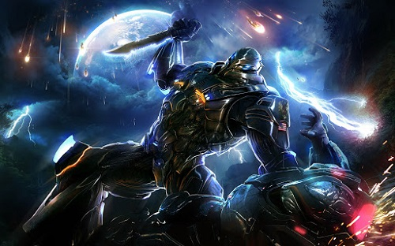
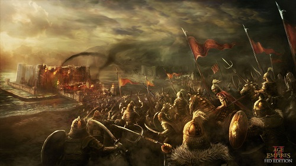
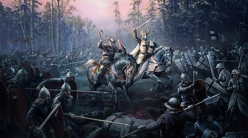
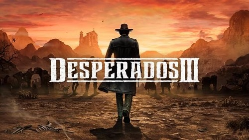
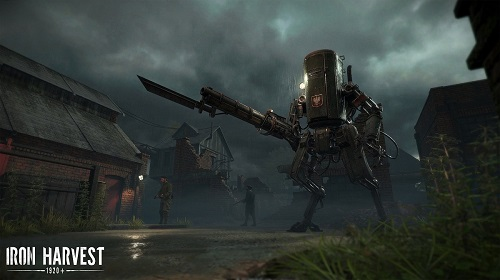

Strategy Games
A strategy video game is a video game genre that focuses on skillful thinking and planning to achieve
victory. It emphasizes strategic, tactical, and sometimes logistical challenges. Many games also offer
economic challenges and exploration. They are generally categorized into four sub-types, depending on
whether the game is turn-based or real-time, and whether the game focuses on strategy or tactics.
Civilization VI

Sid Meier's Civilization VI is developed by Firaxis Games, and published by 2K Games. The
goal for the player is to develop a civilization from an early settlement through many
millennia to become a world power and achieve one of several victory conditions, such as
through military domination, technological superiority, or cultural influence, over other
opponents. Players do this by exploring the world, founding new cities, building city
improvements, deploying military troops to attack and defend from others, researching new
technologies and cultural civics, and engaging in trade and negotiations with other world
leaders.
XCOM 2

XCOM 2 is a 2016 turn-based tactics video game developed by Firaxis Games and published by
2K Games. XCOM, a military organization trying to fight off an alien invasion, has lost the
war and is now a resistance force against the occupation of Earth and the established
totalitarian regime and military dictatorship. Gameplay is split between turn-based combat
in which players command a squad of soldiers to fight enemies, and strategy elements in
which players manage and control the operations of the Avenger, an alien ship that is used
as a mobile base for XCOM.
Starcraft II

StarCraft II: Wings of Liberty is developed and published by Blizzard Entertainment. It was
released worldwide in July 2010. Like its predecessor, the game revolves around three
species: the Terrans, the Zerg, and the Protoss. Wings of Liberty focuses on the Terrans,
while the expansions, Heart of the Swarm and Legacy of the Void, focus on the Zerg and
Protoss, respectively. The game is set four years after the events of 1998's Brood War, and
follows the exploits of Jim Raynor as he leads an insurgent group against the autocratic
Terran Dominion. The game includes new and returning characters and locations from the
original game.
Stellaris

Stellaris is developed and published by Paradox Interactive. Stellaris' gameplay revolves
around space exploration, managing an empire, diplomacy, and space warfare with other space
faring civilizations. It was released worldwide on May 9, 2016. Stellaris is a real-time
grand strategy game set in space, in the distant future. Players take control of a species,
government, and ethics in its early stages of interstellar space exploration, right after
the invention of faster-than-light spaceship technology, ready to claim a place as one of
"the species of the stars".
Age Of Empires II

Age of Empires II: The Age of Kings is a real-time strategy video game developed by Ensemble
Studios and published by Microsoft. The Age of Kings is set in the Middle Ages and contains
thirteen playable civilizations. Players aim to gather resources, which they use to build
towns, create armies, and defeat their enemies. There are five historically based campaigns,
which constrict the player to specialized and story-backed conditions. There are three
additional single-player game modes, and multiplayer is supported.
Crusader Kings III

Crusader Kings III is developed by Paradox Development Studio and published by Paradox
Interactive as a sequel to Crusader Kings and Crusader Kings II. The game was released on 1
September 2020. The game, like its predecessors, is a grand strategy game and dynasty
simulator set in the Middle Ages. Dynasties can form cadet branches that have their own
heads and act mostly independently from their parent dynasty. The heads of dynasties will be
able to use a new resource known as Renown to assert their control over their house.
Desperados 3

Desperados III is 2020 game developed by Mimimi Games and published by THQ Nordic. The game
features five playable characters, with each having access to unique weapons and abilities.
Players can play the game as a stealth game, in which they can assassinate enemies silently.
It is possible for players to complete missions without killing anyone by knocking out and
tying up enemies. Players can also play the game as an action game and utilize the showdown
mode to temporarily stop the game, allowing players to coordinate and chain up the actions
of the player's squad.
Iron Harvest

Iron Harvest is developed by King Art Games and published by Deep Silver. The game was
released on September 1, 2020. The player can control mecha, infantry and hero units. The
game is planned to feature over twenty missions and separate single-player storylines for
each of the main three factions. The game will have multiplayer and skirmish modes.
Total War: Rome II

Total War: Rome II is developed by Creative Assembly and published by Sega. It was released
on 3 September 2013. Rome II received mixed to positive reviews from critics on release,
suffering from significant technical problems. However, it proved a commercial success,
surpassing all other games in the Total War series in both sales and number of concurrent
players on its release day. In September 2014, an Emperor Edition was released, which added
Mac OS X support and addressed many of the technical problems in the game, as well as
overhauled AI battles and upgraded certain visual elements.